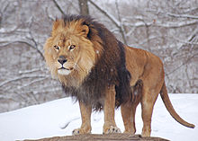
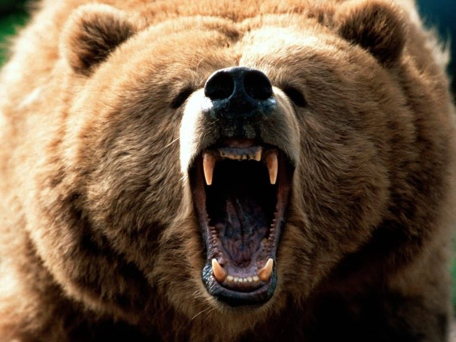
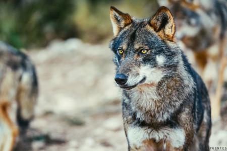

ANIMALES
| Reptiles | Mamiferos | Pájaros | Anfibios |
Mamíferos
Los mamíferos pertenecen al grupo de los vertebrados. Se caracterizan por tener el cuerpo cubierto de pelaje, por nacer del vientre materno (vivíparos) y por alimentar a las crias con leche por medio de glándulas mamarias. Los mamíferos son animales de sangre caliente, es decir, que son capaces de regular la temperatura de su cuerpo para que se mantenga constante independientemente de que haga frío o calor, y respiran a través de pulmones.
Según el tipo de alimentación, los mamíferos se clasifican en: herbívoros, es decir, los que se alimentan de plantas, como el caballo, la oveja o el elefante; carnívoros – que comen carne animal-, como los leones, los lobos y los osos; y omnívoros, que se nutren tanto de carne animal como de vegetales, como los humanos y algunos primates.
En el mundo existen unas 5.500 especies de mamíferos diferentes.
|  |  |  |
| León | Oso Pardo | Lobo Ibérico |